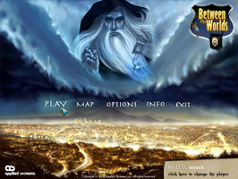
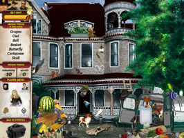
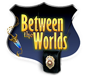

Between the Worlds
Dieser Artikel wurde für die folgenden Ubuntu-Versionen getestet:
Ubuntu 14.04 Trusty Tahr
Zum Verständnis dieses Artikels sind folgende Seiten hilfreich:
Between the Worlds  ist ein spannendes Wimmelbildspiel. Eine ruhige amerikanische Stadt wurde von einer unerklärlichen Verbrechenswelle getroffen. Als erfahrener Detektiv untersucht man die Tatorte und macht sich auf die Suche nach Hinweisen, um das Rätsel zu lösen. Gelingt es das Geheimnis zu lüften und den Bösewicht zu stoppen?
ist ein spannendes Wimmelbildspiel. Eine ruhige amerikanische Stadt wurde von einer unerklärlichen Verbrechenswelle getroffen. Als erfahrener Detektiv untersucht man die Tatorte und macht sich auf die Suche nach Hinweisen, um das Rätsel zu lösen. Gelingt es das Geheimnis zu lüften und den Bösewicht zu stoppen?
|  |  |
| Menü | Spielszene |
Installation¶
Das kostenlose Spiel kann von holarse-linuxgaming  oder Tiny Orange heruntergeladen werden.
oder Tiny Orange heruntergeladen werden.
Anschließend das Archiv ins Homeverzeichnis entpacken [1], z.B. nach ~/Spiele, und in das Verzeichnis between-the-worlds wechseln. Das Spiel kann über den Befehl uspy gestartet werden [2]. Auf Wunsch einen Menüeintrag [3] erstellen.
Bedienung¶
Nach dem Spielstart gelangt man ins Hauptmenü. Hinter den einzelnen Menüpunkten verbirgt sich:
| Bedienung | |
| Menüpunkt | Beschreibung |
| "Play" | Spiel starten |
| "Map" | Tatorte besuchen |
| "Options" | Einstellungen am Sound und am Ton vornehmen sowie zwischen Fenster- und Vollbildmodus umschalten |
| "Info" | Hintergrundgeschichte und Statistik zu den gelösten Fällen |

Problemlösungen¶
64-Bit-System¶
Nur bei 64-bit-Systemen müssen noch die fehlenden Abhängigkeiten installiert [4] werden:
libsdl-image1.2:i386 (universe)
libsdl-mixer1.2:i386 (universe)
 mit apturl
mit apturl
Paketliste zum Kopieren:
sudo apt-get install libsdl-image1.2:i386 libsdl-mixer1.2:i386
sudo aptitude install libsdl-image1.2:i386 libsdl-mixer1.2:i386
Hinweis:
Bei den Paketen muss es sich unbedingt um die 32-bit-Versionen handeln. Auch wenn auf einem 64-bit-System die Pakete libsdl-image1.2 und libsdl-mixer1.2 schon installiert sind, erkennt das Spiel diese nicht!

Infobox¶
| Between the Worlds | |
| Genre: | Wimmelbildspiel |
| Sprache: | |
| Veröffentlichung: | 2008 |
| Entwickler: | Applied Systems Ltd. |
| Systemvoraussetzungen: | 1 GHz Prozessor / 256 MB+ Arbeitsspeicher / 100 MB Festplattenplatz |
| Medien: | Download |
| Strichcode / EAN / GTIN: | - |
| Läuft mit: | nativ |

- Erstellt mit Inyoka
-
 2004 – 2017 ubuntuusers.de • Einige Rechte vorbehalten
2004 – 2017 ubuntuusers.de • Einige Rechte vorbehalten
Lizenz • Kontakt • Datenschutz • Impressum • Serverstatus -
Serverhousing gespendet von